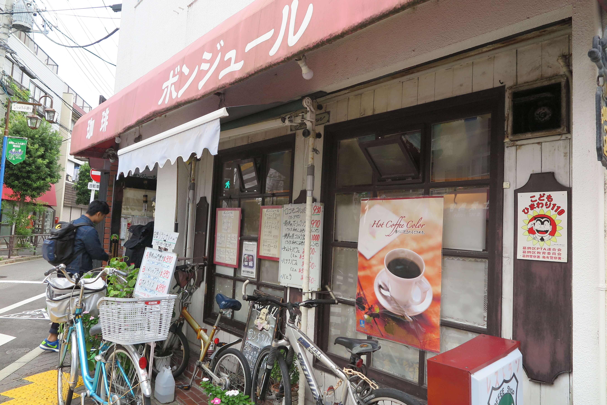

どうも、こんにちは。ライターの片山です。
さあさあみなさん
金町駅から歩いて１０分！
なんだか看板だけでレトロな雰囲気感じません？



うーん…
なんて言ったらいいんだろう、
このジブリ映画に出てきそうなすごく落ち着いた80年代みたいな雰囲気すごくいい。
そしてそして．．．


ボリューム満点の豚の味噌焼き！甘辛な味付けがたまらない。
んー、デザートが食べたい！

ちょっとした甘味処でもあるんです。
Café Bonjourは1979年にご夫婦でオープンしたという創業37年の老舗の喫茶店。
ご主人によると、もともとはイタリアンかメキシカンのお店をやりたかったものの、お店が狭かったために喫茶店としてオープンすることを決断したとのこと。サイフォンで淹れるコーヒーはこだわりの逸品です。

こちらがご主人。店内には似顔絵も。

取材の30分も前に入店した我々取材班、我慢できずに注文しちゃいました。
やや体調不良かつ取材前でがちがちに緊張するインタビュアー高橋。 思わず目を細めます。さてさて参りましょう。


いただきます(‘ω’)ノ

いち


ボンジュールの奥さん、吉田君見るたびに「かわいいねぇ～」の声が止まりません。
そろそろインタビュアー高橋の緊張もほぐれたところでスタート！
＞え、立候補したんじゃないですか？
↓髙橋さんの記事はこちら！↓